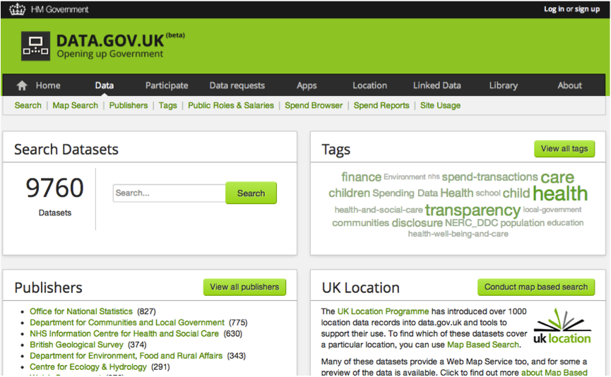
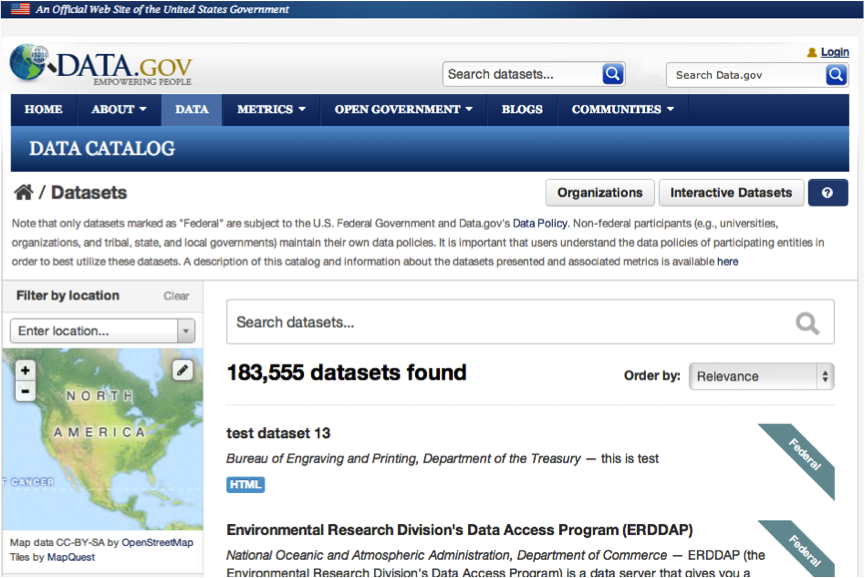
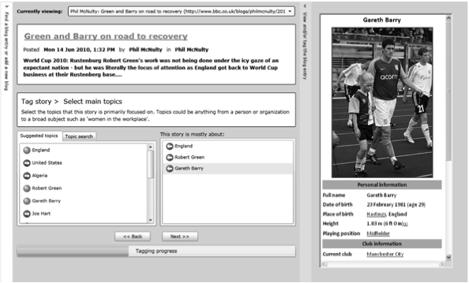
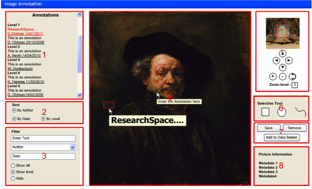
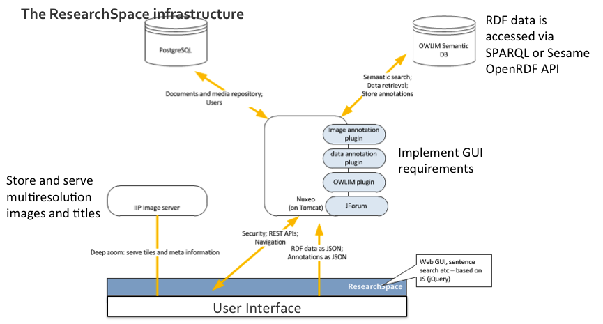
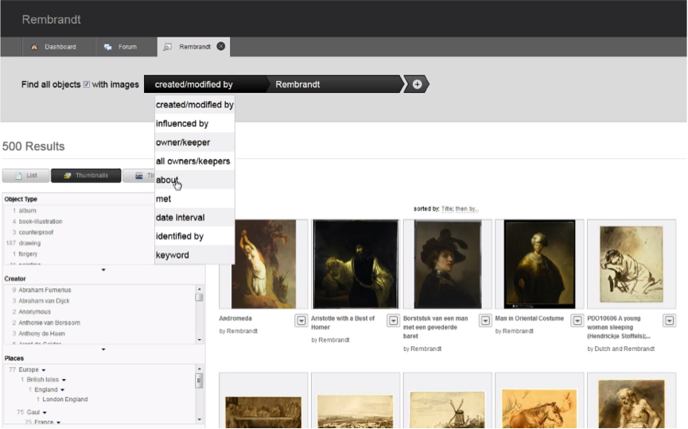
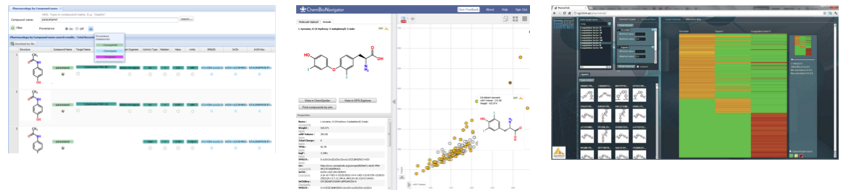
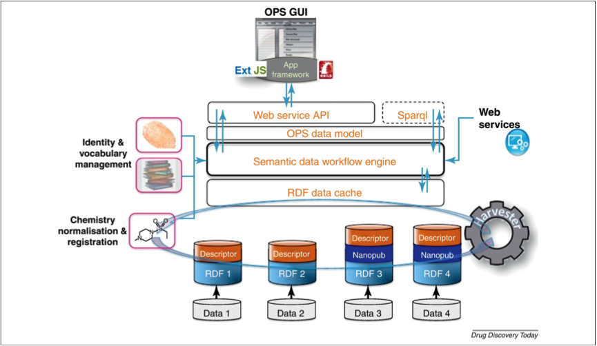
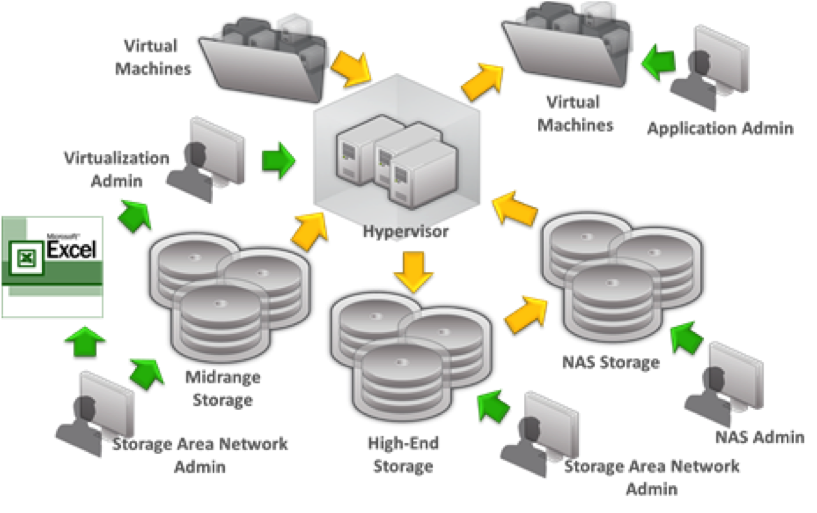
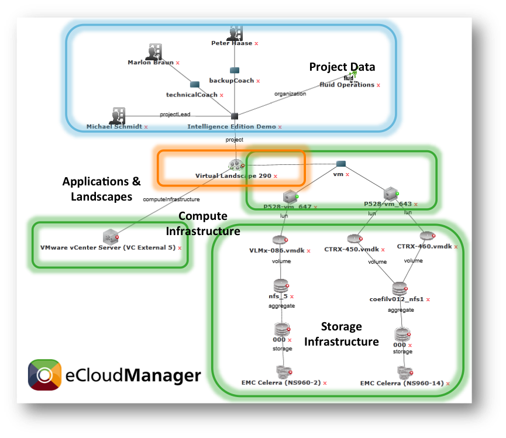

The following sections outline examples of Linked Data applications in a range of domains.
The website data.gov.uk provides a data catalog of UK government information. Over 9000 datasets are available on the site covering themes such as transport, government spending, health, crime and the economy. All of the data is openly available but only a small proportion of it is available via Linked Data technologies. The majority of the datasets are published in tabular format such as CSV. However, a number of Linked Data applications have been built on top the published datasets [3].

Figure 3: The data.gov.uk catalog of UK governmental information [4].
The data.gov portal is the equivalent website in the US. This contains a much larger number of datasets. However, currently none of the datasets are published following Linked Data standards. Some Web and mobile applications have been developed on top of these datasets.

Figure 4: The data.gov catalog of US governmental information [5].
The BBC Dynamic Semantic Publishing (DSP) [6] architecture aims at automating the aggregation or publishing of interrelated content within the BBC portal. This initiative started with sports content before moving to other areas of the BBC. This functionality allows the user of BBC content to navigate from an article to semantically related content. For example, an article about a football match might mention the teams, key players, the managers and the ground at which the match was played. From this article the reader could follow links to further articles related to any of those entities, and then navigate further from there. The reader could therefore initially find out about the game, move onto a biographical article about one the managers and then start reading about a previous football team that they managed.
The links between the articles, rather than being manually specified by a journalist are generated based on semantic annotations associated with each article. The Graffiti tool is used to add these semantic annotations, associating the articles with Linked Data concepts such as people and locations (see Figure 5). An OWLIM triplestore is used to store and reason over the RDF data representing the articles and associated data.
As a triplestore is used to drive the data presented on the website, this application can be classified as intrinsic in terms of its use of Semantic Web technologies. However, its use of Semantic Web technologies is not particularly visible to the user, who interacts with it as a conventional website. This can be contrasted with Linked Data browsers that directly expose the RDF data to the user.

Figure 5. The Graffiti tool.
ResearchSpace [7] is an environment for conducting cultural historical research. It provides RDF datasets and tools for investigating cultural objects such as paintings. Associated concepts such as artists and locations are semantically represented. A number of tools are provided allowing users both to access the data and also contribute new data in the form of RDF annotations. Figure 6 shows the Image Annotation tool. This can be used to describe different features of an artwork such as the subject and its location.

Figure 6: Image annotation.
Movie 1: ResearchSpace as an example Linked Data application.
The architecture of ResearchSpace is shown below. An SQL database is used to store documents and media. A triplestore is used to store annotations and associated vocabularies. The Nuxeo content management platform delivers the user interface and has a series of plugins to support annotation and communication with the triplestore.

Figure 7: ResearchSpace architecture [8].
ResearchSpace also offers a faceted search interface to the cultural resources. Facets for driven by the semantic description of the artefacts according to the CIDOC CRM ontology [9]. This allows filtering of resources according to a number of associated concepts such as object type (e.g. sketch, painting) location and creator. See Section 19 of Chapter 4 for more examples of faceted search over RDF data.

Figure 8: The ResearchSpace CRM Search System [10].
ResearchSpace can be classified as a hybrid tool that intrinsically and extrinsically combines Semantic Web technologies. For example it uses a combination of a triplestore and relational database to store content. It also both consumes and produces Linked Data in combining existing data about museum objects with additional annotations. Semantic descriptions exploit the structure of the CIDOC CRM ontology to express the different features of the described objects.
Open Pharmacology Space is a Linked Data application that aims to provide a semantic research environment for pharmacology, comparable to the support offered by ResearchSpace for cultural research. Open Pharmacology Space integrates different data sources and provides an API to access the aggregated data. Three tools that have been built on top of the Open Pharmacology Space are Open PHACTS Explorer, ChemBioNavigator and PharmaTrek. Open PHACTS Explorer provides essentially a Linked Data browser of the RDF data. ChemBioNavigator is a tool for the visualisation of the chemical and biological space of a molecule group. PharmaTrek is a visualisation tool specifically designed for use with the ChEMBL biochemical database.

Figure 9: Open PHACTS Explorer, ChemBioNavigator and PharmaTrek [11].
The architecture of Open Pharmacology Space is shown below. A number of data sources are consumed in a triplestore referred to as an RDF data cache. Some of these sources have to be harvested and transformed by the application. The semantic data workflow engine drives the logic of the application. Data produced by Open Pharmacology Space can be accessed via an API or a SPARQL endpoint. This data is made available according to a unified Open Pharmacology Space data model.

Figure 10: Open Pharmacology Space architecture [12].
The Open Pharmacology Space makes both intrinsic and extrinsic use of Semantic Web technologies. The storage of data in RDF format and the use of semantics to represent workflow are intrinsic aspects of the application. Open Pharmacology Space is also both a consumer and producer of RDF data. It consumes vocabularies of varied richness and produces data according to its own unified data model.
Movie 2: Screencast of the Linked Data API (LDA).
eCloudManager is a data center management application. A data centre typically comprises a large number of hardware components from a number of manufacturers. Each of these components will have a reporting system, custom-made by their manufacturer. Together these components provide metadata information on all of the hardware running in the data centre, its location and status. The physical hardware itself will generally be used to run a number of virtual machines that may be migrated across different hardware platforms. The hardware and configuration of virtual machines will deliver a number of software applications each with their own licensing arrangements and separate data stores. A data center therefore has a number of tools that can all provide partial information about the overall state of a data center.

Figure 11: A typical data center comprising hardware, virtual machines and software applications [13].
The aim of eCloudManager is to integrate different hardware and software components into a single semantic view. This views brings together the hardware components of various manufacturers, the virtualisation layer delivered by the hardware and the supported range of software applications. The eCloudManager also provides a business view indicating which departments are responsible for different services or hardware, and which customers may be affected by the failure of those components.
The overall integrated view provided by eCloudManager can be filtered depending on the user’s interest. The user could create a view on the system dedicated to the storage infrastructure comprising hardware components from multiple manufacturers. Similar views can also be created on the virtualisation, application or project levels.

Figure 12: The integrated view on a data centre provided by eCloudManager [13].